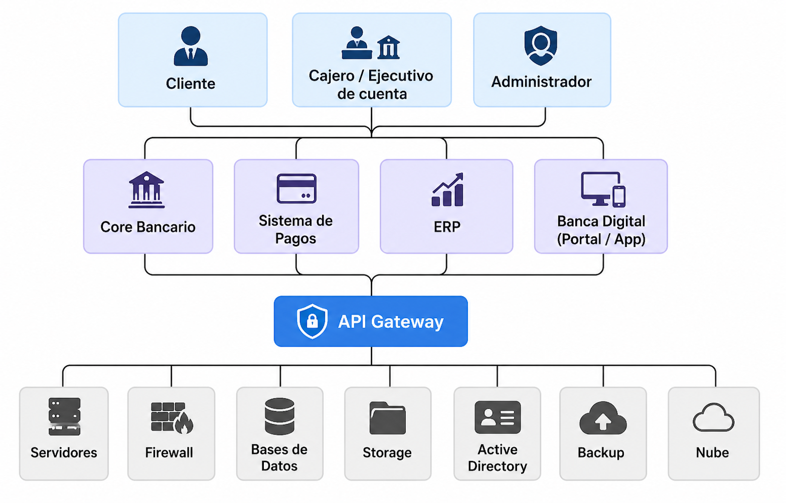

Inicio
El proyecto de Arquitectura Empresarial aplicado a un banco permite visualizar cómo se relacionan los actores principales, los servicios financieros, las aplicaciones bancarias y la infraestructura tecnológica que soporta la operación.
Clientes
Usuarios que realizan consultas, pagos, transferencias y operaciones digitales.
Servicios Bancarios
Apertura de cuentas, pagos, transferencias, consultas y gestión de productos.
Tecnología
Core bancario, API Gateway, bases de datos, nube, firewall y respaldo.
Explicación guiada
En este caso, TOGAF se utiliza como marco de referencia para organizar la arquitectura empresarial del banco. ArchiMate permite representar gráficamente la relación entre la capa de negocio, la capa de aplicación y la capa tecnológica.
- Capa de negocio: cliente, cajero, ejecutivo de cuenta y administrador.
- Capa de aplicación: servicios de cuentas, transferencias, pagos y consultas.
- Capa tecnológica: core bancario, sistema de pagos, bases de datos, servidores y nube.
Diagrama ArchiMate del Banco
El siguiente diagrama muestra la relación entre los actores del banco, los servicios digitales y los sistemas tecnológicos que permiten operar los procesos financieros.

Mapa de Arquitectura de TI
El mapa de TI presenta la estructura tecnológica que soporta la banca digital, incluyendo sistemas centrales, seguridad, almacenamiento, respaldo, nube y administración de usuarios.

Conclusiones
- La arquitectura empresarial permite alinear los procesos bancarios con la tecnología.
- El API Gateway facilita la integración segura entre canales digitales y sistemas internos.
- El core bancario es fundamental para gestionar cuentas, pagos y transacciones.
- La infraestructura tecnológica garantiza seguridad, disponibilidad y continuidad del servicio.
Referencias
- The Open Group. (2021). ArchiMate® 3.2 Specification.
- The Open Group. (2018). TOGAF® Standard, Version 9.2.
- ISO/IEC/IEEE 42010:2011. Software and Systems Engineering — Architecture Description.
- Material del curso - Arquitectura Empresarial.